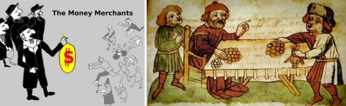
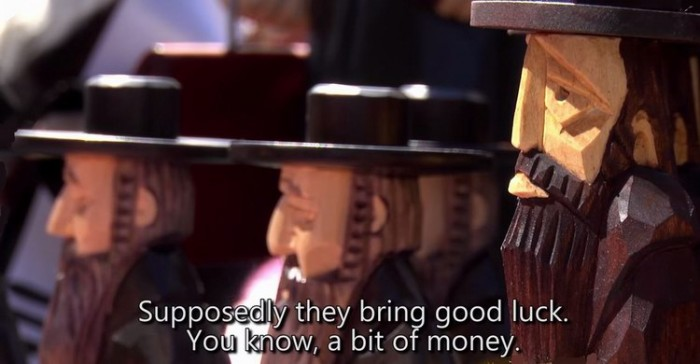
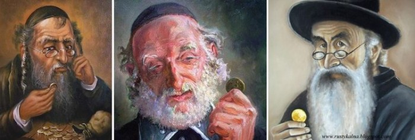
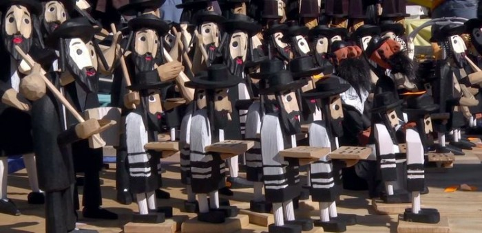

ЕВРЕЙ С МОНЕТОЙ
Эти фигурки выполняют функцию... еврея-домового. Они так и называются "Еврей на счастье" (для русско-еврейского уха оно еще лучше звучит - Żyd na szczęście) и населяют очень многие польские дома и фирмы.

От редактора:
На следующий день после Йом а-Шоа (день, когда в Израиле вспоминают о 6 млн. сгинувших во Второй Мировой Войне евреев) я наткнулся на статью в одном из ивритских альманахов. Порыскал в сети, нашел по-русски. Не мог удержаться, что бы не потащить это в свой блог (это же мой профиль - "евреи + искусство"). Для полноты картины под статьей я поместил фрагмент из Википедии о еврейском вопросе в Польше. Имеет смысл посмотреть все это вместе. Захотелось поместить это между Днем Шоа и Днем Независимости Израиля, днем его возрождения.
Советую прочитать это вместе с "ЕВРЕЙСКИЕ ОБРАЗЫ в творчестве католика Йозефа Регулы"
***
Я - фольклорный элемент и потомственный домовой!
Есть в Польше традиции, которые заставляют замереть прямо посреди Речи Посполитой в глубоком пардоне. Сегодня я расскажу вам об одной такой юной традиции, начало которой восходит к рубежу 20-21 вв., а предпосылки к ее формированию уходят глубоко в песок столетий.

Если вы когда-нибудь бывали в польских городах, то возможно замечали латки, на которых продают деревянные фигурки евреев модели "хасид" и небольшие картинки, изображающие седобородого аида в кипе или шляпе, считающего деньги. В первый мой приезд в Польшу, увиденное меня здорово не порадовало. "Ага, как же - подумала я - своих евреев всех вывели, а теперь на их изображениях зарабатывают" - и была я в этот момент как никогда далека от истины. Т.е. конечно зарабатывают, но это вообще не главное в данной истории.

Дело в том, что эти фигурки выполняют функцию... еврея-домового. Они так и называются "Еврей на счастье" (для русско-еврейского уха оно еще лучше звучит - Żyd na szczęście) и населяют очень многие польские дома и фирмы. Существуют два основных вида "домового еврея" - это "еврей с денежкой" (żyd z pieniążkiem) и "еврей с лимоном (żyd z cytryną)" - первый обеспечивает в польском доме финансовый достаток, а второй - продовольственное разнообразие и здоровье.

Если вы окунетесь в пучину полонета и поищите информацию о данном явлении, то вы неминуемо наткнетесь на разнообразные форумы, чаты и статьи, в которых обсуждается как же и где правильно "повесть еврея на счастье" или на взвешенный анализ преимущества Жида перед слонами и жабами, деньгу приносящими по индийским и китайским традициям.
Чтобы активизировать "Еврея-домового" необходимо придерживаться ряда правил.
Во-первых. его абсолютно бесполезно покупать. Надо, чтобы кто-то вам подарил на счастье еврея. Важно, чтобы фигурка или картина изображала еврея в летах, с добродушным или сосредоточенным выражением на лице. Хорошо бы, чтоб кроме монетки в руках, у него был мешочек с деньгами и бухгалтерские книги.

Во-вторых, "Еврея-домового" лучше всего вешать в сенях или прихожей - ибо нечего нехристю делать в покоях доброго католика - по левой стороне от входной двери.
В-третьих, входя в дом, необходимо поворачивать свою физиономию в сторону "Еврея домового", иначе обидится.
В-пятых - самое главное - по субботам или в канун Нового Года Жида надо перевернуть вверх тормашками, чтобы все деньги, которые он насчитал за неделю или год выпали из его сумки прям на стол честного поляка. (От редактора: я не сразу понял, почему именно по субботам? Все просто: суббота - это единственный день, по представлению поляка, когда возможно отнять у жида деньги. Ведь еврей посвящает субботу своему Богу. И иудейская традиция запрещает в субботу не только работать, но даже и обсуждать вопросы бизнеса и тем более, прикасаться к деньгам. Именно по субботам он выпускает деньги из рук).

Удивительная традиция и ее быстрое распространение по всей территории Польши наводит на разные размышления и становится поводом для множества дискуссий: о стереотипах, о истории, о психологии и, конечно, об антисемитизме. Сразу оговорюсь, что поляки абсолютно не понимают что в этом может быть антисемитского? Он же ( еврей-домовой, т.е.) хороший? - хороший! Они его любят? - любят! Берегут? - берегут! В красный угол вешают? - вешают! Вон, даже целую философию вывели - "учись у еврея" называется. Повесь его светлый образ обок биржевых таблиц и смотри, как еврей на картине, размышляет над вложением каждой монетки, несмотря на то, что этих денег у него целый мешок. А ведь раньше, бывало, в холопских дамах кость с еврейского кладбища в доме вешали на счастье, а в Мокрый Понедельник после Пасхи на фигурку Жида вообще плевали. Сейчас-то все же не так?!..В общем, ежели вы, также как и я, не можете разобраться в своих чувствах и хотите больше понять, то искренне рекомендую к просмотрю небольшой фильм Эрики Лехнер, рассказывающий о данной традиции. Фильм на польском и английском языках, поэтому понятен будет всем.
От редактора:
Кто-то скажет - евреи всегда ноют, чуть что, сразу крики и обвинения в антисемитизме. Теперь вот эти безобидные польские "еврейские матрешки". Чтобы хоть немного понять о чем идет речь, важно взглянуть на выше приведенный текст хотя бы в контексте описания ситуации Википедией. Не хочу ничего плохого говорить о поляках. Бог им - Судья. Нацистами было казнено свыше 2 тыс. поляков, спасавших или помогавших евреям во время оккупации.
Но дух, тот, что бродит по Европе и всему миру, о нем мои размышления...
Вот маленький фрагмент из статьи ХОЛОКОСТ В ПОЛЬШЕ (Википедия):
На территории Польши были организованы еврейские гетто и были построены крупнейшие лагеря смерти, предназначенные для массового уничтожения людей. В лагерях смерти в Польше уничтожали также евреев из других стран, оккупированных нацистами — в рамках программы окончательного решения еврейского вопроса.
Из живших в Польше на начало сентября 1939 года 3,3 млн евреев во время войны погибло 2,8 млн, то есть 85 %
ПОСЛЕ освобождения Польши от немецкой оккупации в 1944 году уцелевшие евреи стали возвращаться. Практически в это же время евреи начали подвергаться гонениям со стороны поляков. Нежелание поляков возвращать присвоенное во время войны еврейское имущество и конфликты с новой властью, в рядах которой были и евреи, вызвали многочисленные нападения на евреев — с ноября 1944 по декабрь 1945 от таких нападений погиб 351 еврей. До конца 1947 года погибло от 500 до 1500 евреев.
Погром в Кельце (июль 1946 г. Было убито 40 и ранено около 50 евреев) вызвал массовую миграцию евреев из Польши: после погрома (в течение июня — августа) бежало 54 000 евреев. Власти приписали погром «реакционерам», католическая церковь в лице примаса Хлонда обвинила в погроме самих евреев. Травля возвращавшихся в Польшу евреев, заставила их бежать не только из Польши, но и из Европы вообще.
Советую прочитать это вместе с "ЕВРЕЙСКИЕ ОБРАЗЫ в творчестве католика Йозефа Регулы"